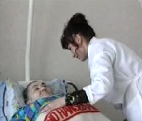
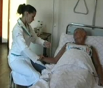
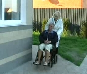
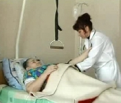

Проблема, которая может коснуться каждого!!!
Болезнь близких нам людей, многие из них нуждаются в уходе, за частую в уходе профессиональном - медицинском.
"Вера Надежда Любовь" - лучшая в Украине медицинская компания, специализирующаяся по уходу за тяжело больными, пожилыми людьми и больными детьми на дому или в стационаре.
   
Мы предоставляем квалифицированный медсестринский уход, который включает в себя: утренний и вечерний туалет больного, контроль артериального давления, температуры тела, профилактику или обработку пролежней, кормление больного, выполнение назначений. Консультации врачей.
Постоянно расширяется список наших партнеров, среди которых компания по производству средств гигиен "ТЕНА", товары для здоровья и реабилитации компания "OSD", центр реабилитации спинальных больных "МедАРС", благотворительный фонд "Soleterre", а также со страховыми компаниями "Провидна", "Крона", "Инго-Украина", "GENERALI GARANT". Также постоянно расширяем комплекс услуг предоставляемых нашим пациентам.
Неизменным остается качество работы наших медсестер. Специалистами нашего центра проводится ежедневный мониторинг состояния пациентов, отмечается его динамика и проводится коррекция лечебных мероприятий.
В случае необходимости привлекаются узкопрофильные специалисты, оказывается неотложная помощь. Наши пациенты всегда обеспечены средствами для ухода: памперсами, пеленками, влажными салфетками, моющими средствами.
При необходимости нашим больным предоставляются функциональные кровати, ходунки, костыли, коляски, прикроватные туалеты, противопролежневые матрацы.
Сотрудники ЦСМ "ВНЛ"- коллектив профессионалов, посвятивший свою жизнь благородному делу.
Детальная информация на сайте www.patronage.com.ua
Контактный тел.: (044) 238-77-00